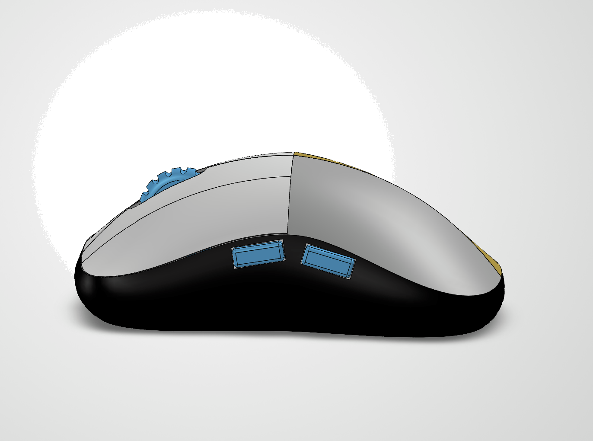
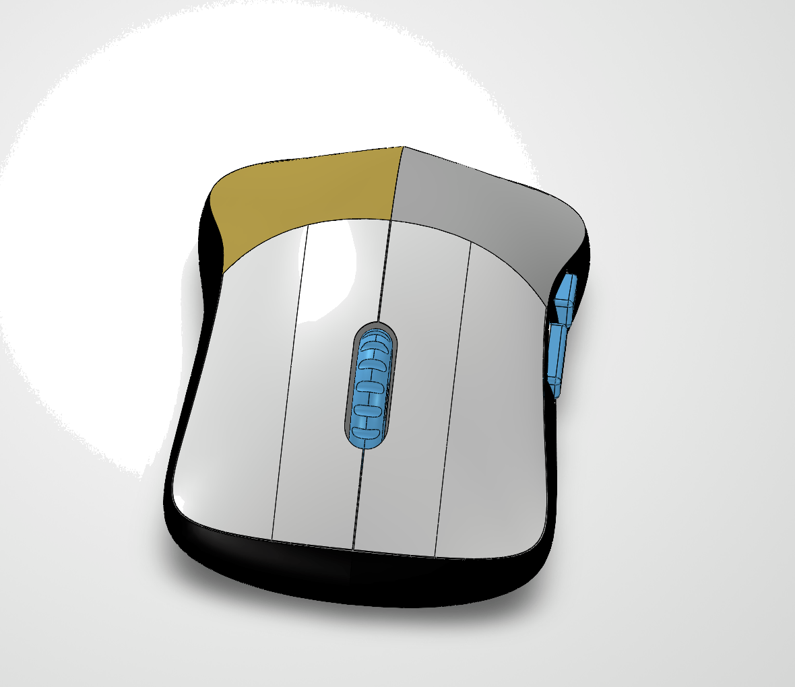

Computer Mouse
Personal Project
CAD PreviewDrag to pan · scroll to zoom

02Real-life prototype


The Design
A SolidWorks computer mouse featuring a sculpted surface shell, scroll wheel and side buttons.
Design Process
- Researched gaming mouse layouts and measured common physical constraints.
- Modelled the shell using surface modelling tools.
- Integrated a scroll wheel, side buttons and separated left/right mouse buttons.
Results and Skills
- Created an aerodynamic, reduced-weight shell using solid and surface modelling.
- Applied consumer research and ergonomic constraints.
- Practised complex curves and integration of solid components.